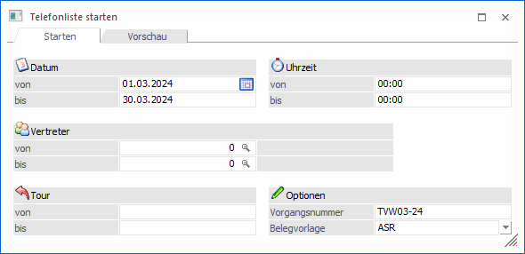
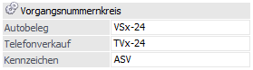
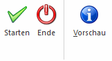

Wurden die Termine definiert und für den Kunden ein Beleg mit der entsprechenden Autobelegzeile erzeugt, so kann die Telefonliste gestartet und damit die Belege für die entsprechenden Termine erzeugt werden. (Einleitung zum Telefonverkauf siehe Kapitel Telefonverkauf)
Gehen Sie dafür in den Menüpunkt…
1 Erfassen
1 Telefonverkauf
1 Telefonliste starten

Hier stehen Ihnen verschiedene Selektionsmöglichkeiten für die Berechnung der Termine zur Verfügung.
Ø Datum
Es wird der Datumsbereich eingegeben, für den die Termine berechnet werden sollen. So kann man sich z.B. den Plan für die gesamte Woche erstellen lassen.
Ø Uhrzeit
Es kann auf eine bestimmte Uhrzeit eingeschränkt werden. Damit werden nur jene Termine berechnet, deren Zeitangabe in diesem Bereich liegt.
Ø Vertreter
Es kann auf den Vertreter, der im Belegkopf eingetragen wurde, eingeschränkt werden.
Ø Tour
Es kann auf die Tour, die im Belegkopf eingetragen wurde, eingeschränkt werden.
Ø Vorgangsnummer
Mit Hilfe der Vorgangsnummer können die Termine, die bei einem Lauf erzeugt wurden, jederzeit wiedergefunden werden bzw. kann bei der Telefonliste nach dieser Vorgangsnummer selektiert werden.
Die Vorgangsnummer kann in den Fakt-Parametern vorbelegt werden und wird beim Start der Telefonliste vorgeschlagen und automatisch um 1 hochgezählt.
In den Fakt-Parametern kann des Weiteren ein Kennzeichen eingetragen werden, mit dem gesteuert werden kann, welche Vorgangsnummer später beim Bearbeiten der Telefonliste zur Verfügung stehen sollen.

Ist kein Kennzeichen eingetragen so stehen bei der Telefonliste beide Vorgangsnummer zur Verfügung. D.h. sowohl jene aus dem Telefonverkauf als auch jene aus dem Autobeleg.
Soll das verhindert werden, so muss ein Kennzeichen eingetragen werden, dadurch werden nur jene Vorgangsnummern bei der Telefonliste berücksichtig, die dieses Kennzeichen beinhalten.
Ø Belegvorlage
Aus der Auswahllistbox kann eine vorhandene Belegvorlage gewählt werden, wodurch bestimmte Felder z.B. mit einem bestimmten Wert vorbelegt, oder aus dem "Basisbeleg" übernommen werden können.
Buttons

Ø Starten
Nach Drücken des Starten-Buttons werden die Termine berechnet und Sie gelangen automatisch in die Bearbeitung der Telefonliste.
Ø Ende
Durch Drücken des Buttons "Ende" bzw. der Taste ESC wird das Fenster.
Ø Vorschau
Mit dem Vorschau-Button können vor dem Start der Berechnung der Termine kontrolliert werden.